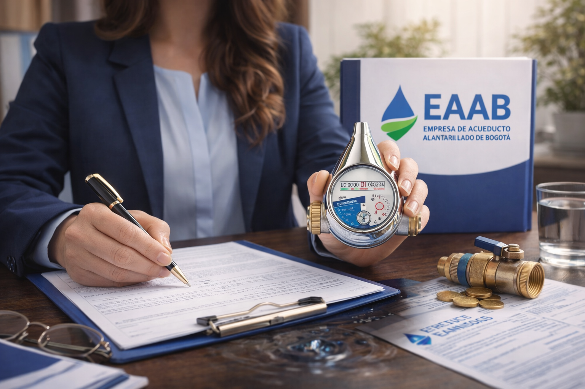

Acción de Tutela
Protección inmediata de derechos fundamentales cuando sean vulnerados o amenazados.
Ver másDerechos de petición, tutelas, vivienda y problemas con bancos.
Orientación jurídica clara, accesible y confiable en Bogotá.
Te acompaño en la defensa de tus derechos mediante derechos de petición, acciones de tutela, asesoría en vivienda VIS y soluciones legales personalizadas. También realizo orientación y trámites ante la Empresa de Acueducto y Alcantarillado de Bogotá.
Protección inmediata de derechos fundamentales cuando sean vulnerados o amenazados.
Ver más
Solicitudes respetuosas ante autoridades y entidades privadas con derecho a respuesta pronta.
Ver más
Trámites para conexión a la red de alcantarillado en Bogotá, con gestión directa ante la EAAB.
Ver más
Orientación en conflictos laborales, terminación de contrato, despidos y garantías mínimas.
Ver más
Acompañamiento en custodia, alimentos, visitas y otros asuntos familiares.
Ver más
Orientación en postulación, requisitos y acceso a subsidios para adquisición de vivienda.
Ver más
Orientación para normalización de obligaciones, acuerdos de pago e insolvencia de persona natural.
Ver más

Estudiante de Derecho y asesora jurídica en formación, enfocada en brindar orientación legal clara, ética y accesible.
Apoyo en derechos de petición, acciones de tutela, derecho laboral y vivienda VIS.
Soluciones jurídicas claras, humanas y accesibles.
Resuelve tus dudas legales con información clara y práctica.
Compromiso, criterio y responsabilidad en cada orientación legal.
⚖️Apoyo visual y herramientas modernas para una asesoría más clara.
💻Atención cercana, humana y enfocada en tu caso.
🤝y obtén asesoría profesional